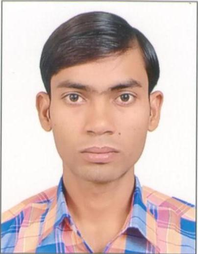

| Name | Ajay Kant Upadhyay |  |
| Designation | Web Developer | |
| Address | Village-Rajrai, Post Office-Barauli Ahir, Agra, Uttar Pradesh-282001 | |
| Email ID | ajaykant900@gmail.com | |
| Mobile Number | +91-9458451159 | |
| Experience | A professionally qualified Web Developer having 3 years of experience in MHRD sponsored Website “Metal Forming Virtual Simulation Lab” since August 2010 to till date at Dayalbagh Educational Institute, Dayalbagh, Agra. | |
| Project Details | The project aimed at developing "Virtual Laboratory" for Metal Forming processes under “National Mission on Education through Information and Communication Technology (NME-ICT)” of MHRD e-learning Project. The website helps Engineering students for understanding various metal forming processes through interactive videos of simulations, detailed description of the processes and MCQ’s. | |
| Development Tools | PHP, MySQL, DHTML, CSS, Java Script | |
| Onsite Assignment | 1. http://14.139.245.214/mfvlab/home.php Metal Forming Virtual Simulation Lab Website. 2. http://14.139.245.214/mfvlab/mem103.php Manufacturing Process (MEM-103) Website according 2013 Syllabus. 3. http://14.139.245.214/mfvlab/MEM103_12/mem103.php Manufacturing Process (MEM-103) Website according 2012 Syllabus. 4. http://14.139.245.214/mfvlab/feedbk.php Feedback form "with file handling" for Faculty of Engineering, Dayalbagh Educational Institute. When Feedback is submitted, It generates a document file on server. | |
| Technical Skills | Languages: PHP, DHTML, CSS, C, C++, Asp.Net with C# Database: MySQL, SQL 2005, MS Access Concepts: OOPs Concept, Data Structure Web Server: XAMPP, WAMP and IIS Platforms: Windows and Linux Control System: Bazaar version control System 3 days training in IIIT Hyderabad and 3 days training in IIT Delhi. | |
| Qualifications | 1. M.C.A. in 2010 from Institute of Computer and Information Science (ICIS), Khandari, affiliated to Dr. Bhim Rao Ambedkar University, Agra. 2. B.Sc. in 2007 from Krishna college of Science and Rural Technology, Bamrauli Katara, affiliated to Dr. Bhim Rao Ambedkar University, Agra. 3. Intermediate (12th) in 2004 from Uttar Pradesh Board. 4. High School (10th) in 2002 from Uttar Pradesh Board. | |
| Academic Project | Project Title: e-Cop (online Police Station) Development Tools: ASP.NET with C#, SQL 2005 Project Focus: The project aimed at developing a website which works as Online Police Station. This website provided various facilities for civilians to lodge F.I.R. and know about various activities of Police, reports etc. with a single click. | |